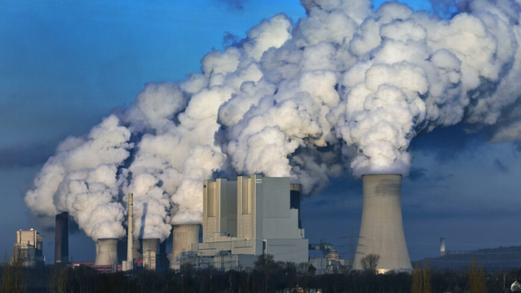

Pollution is a big problem in our world. Pollution is hurting our world in ways that is harming our environment and animals everyday lives. Tons of animals are dying everyday because of the air in the atmosphere. Some people cant breathe fresh air because of the conditions in the atmosphere caused by us.
Ever since we invented a new way to invent things using smoke or fire, the atmosphere has gotten more and more polluted. Most of the pollution is caused my factories who use heavy machinery that produce smoke. And every year more and more pollution is in the air and it keeps slowly growing more and more.
Animals are suffering from these changes in the air. Before air pollution animals would live a life without a trouble of breathing. Now when air pollution is high, some animals are suffering cause of these changes. The pollution gets in their lungs and cause problems in their bodies. Air pollution also causes plants to die and thatv is a food resource for many animals of our world.
Before Pollution:
After Pollution:

The world has gotten more and more polluted over the years. If it keeps going up, more and more organisms will keep dying or suffering from it. Some of us humans somewhere in the world are having the affect right now. Thats why some organizations are trying to make an impact making cleaner engineering. Some companies have already switched so they don't pollute as much. If you want to read the impact they have had or the amount of pollution in the air, then click the link at the bottom to read those articles.